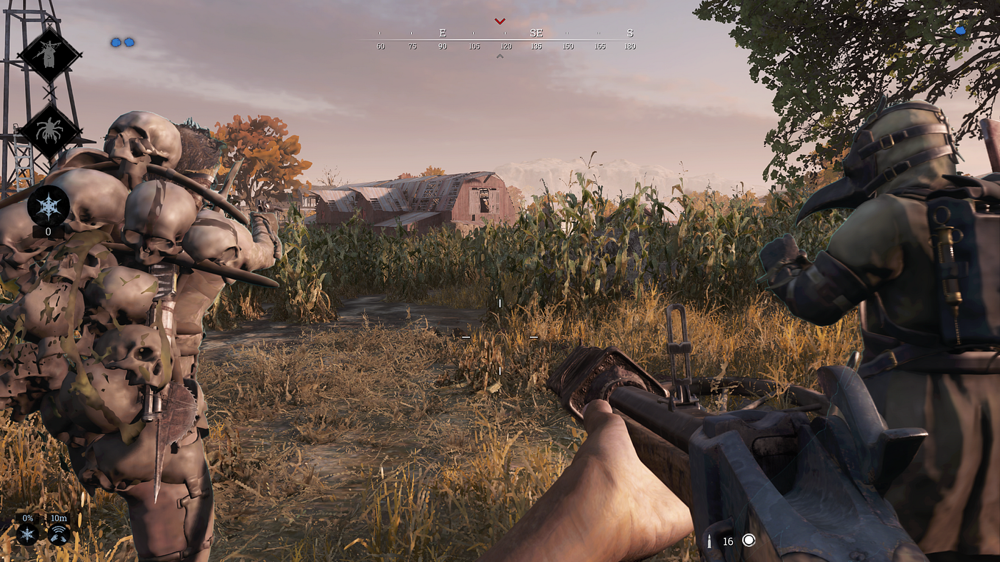
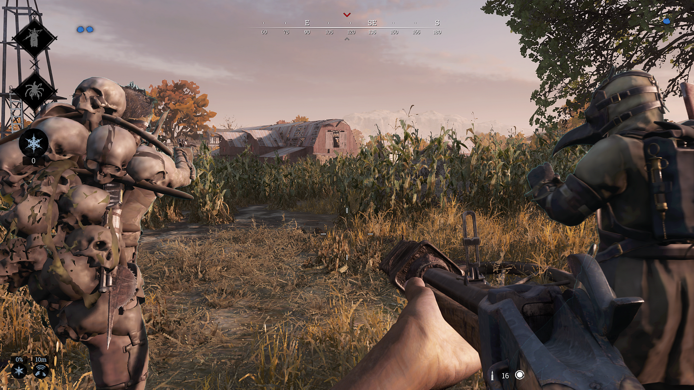

CRYTEK
¿Quienes somos?
Crytek es una empresa desarrolladora de videojuegos alemana fundada en 1999 por tres hermanos turco-alemanes: Avni, Cevat y Faruk Yerli. La sede central se ubica en Fráncfort del Meno, Alemania. Además, cuenta con otras cuatro sucursales en Kiev, Budapest, Sofía y Nottingham. El equipo de desarrollo de Crytek está compuesto por 296 programadores de Europa, Asia, América del Norte, Oceanía y África. Son mejor conocidos por su videojuego Far Cry y su motor de videojuego CryEngine, que también se utilizó en Crysis y, más recientemente, en CryEngine 2 y CryEngine 3.
Misión:
Crear experiencias de juego inmersivas y emocionantes que cautiven a los jugadores.
Visión:
Ser líderes en la industria de los videojuegos, ofreciendo títulos innovadores y de alta calidad.
 
